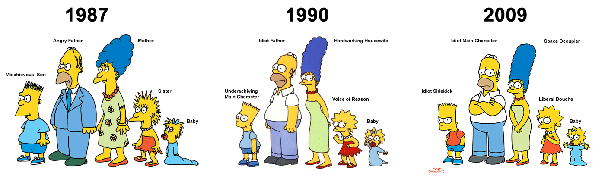

INICIO
LA ESCUELA PRIMARIA
LA CASA
LA PLANTA NUCLEAR

LOS SIMPSON
Los Simpson debutaron en 1987 con el primer corto, Good Night, en el programa El show de Tracey Ullman. El programa era un sketch de humor popular en Estados Unidos a finales de los años ochenta.